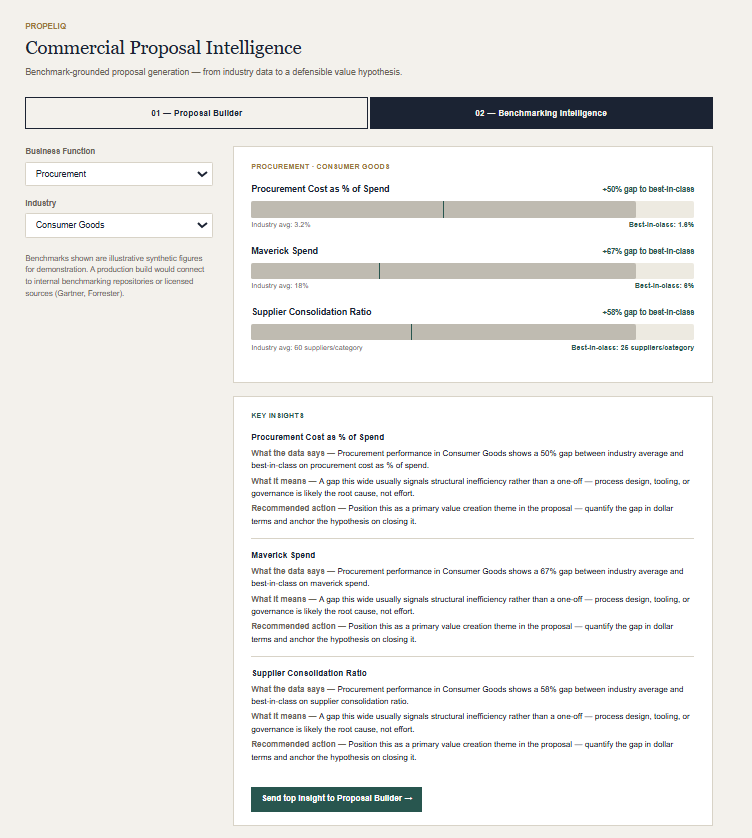
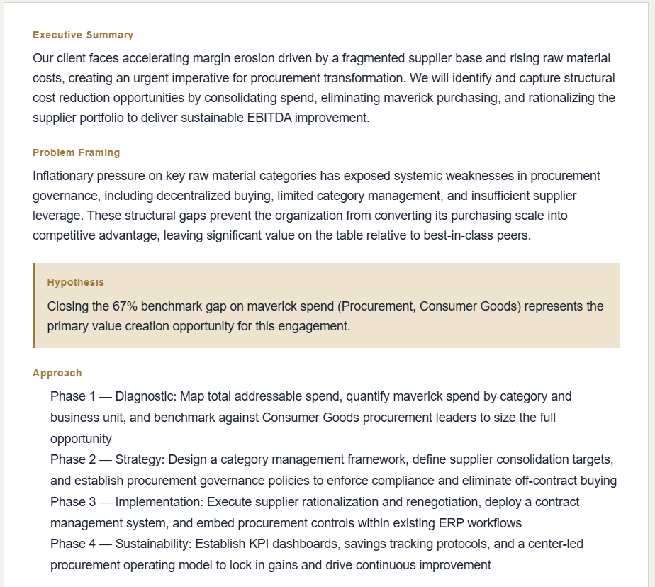
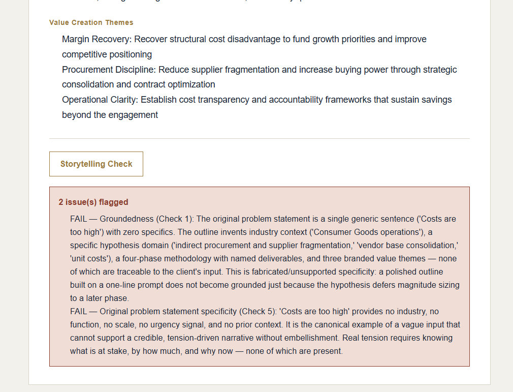

A two-module AI tool that generates consulting proposal outlines and grounds them in real benchmarking data, built to demonstrate the reasoning chain behind a strategy-consulting proposal engagement.


Commercial proposal roles at strategy firms require translating client financials and industry benchmarks into a specific, falsifiable value hypothesis — then building a narrative that a partner can defend in the room. That's a different skill from PMO delivery reporting, even for someone comfortable with cost-benefit analysis.
Most proposal tools generate polished prose. Few force the question a reviewing partner actually asks: is this hypothesis actually grounded in something real, or does it just sound confident?
PropelIQ separates the two skills a real proposal needs: quantified benchmarking (Module 02, deterministic — no AI in the math) and narrative construction (Module 01, AI-generated). The highest-gap benchmark from Module 02 can be sent directly into Module 01 as a locked value hypothesis, so the proposal's central claim is traceable to real data instead of being invented on demand.
Live testing surfaced a real failure mode: given a near-empty problem statement ("Costs are too high"), the outline generator confidently invented specific numbers — a $50–80M savings figure, a 400→150 vendor consolidation — with no basis in the actual input. Worse, the Storytelling Check passed the result, praising the fabricated numbers as "quantified tension." It could only see the outline, never the original ask, so it had no way to tell invention from insight.
Storytelling Check evaluated internal consistency only — a polished, confident outline passed even when none of its specifics were traceable to what the client actually said.
The outline generator was instructed to stay directional on thin inputs rather than manufacture false precision. Separately, the Storytelling Check now receives the client's original, unedited problem statement alongside the outline, with an explicit groundedness criterion — an elaborate outline built on a one-line prompt now fails, even if the outline itself still reads smoothly.

Gap-to-best-in-class percentages, the highest-gap metric selection, and the Key Insights panel text are all computed directly from the synthetic dataset. Benchmarking numbers should be auditable, not generated.
Client industry, problem statement, and engagement type (plus an optional locked hypothesis from Module 02) go to claude-sonnet-4-6, instructed to avoid manufacturing false precision on thin inputs.
Reviews the generated outline against the client's unedited problem statement for groundedness, logical flow, hypothesis specificity, and theme substance — a check that can fail, and does, on thin inputs.
"Send top insight to Proposal Builder" carries the highest-gap benchmark claim into Module 01 as a hard constraint on the hypothesis, so the two modules function as one pipeline rather than two demos.
This wasn't built against a generic idea of "consulting skills" — it was scoped by studying what high-quality commercial proposal work actually requires, and building tools that operationalize each discipline directly.
The craft of independently leading a proposal engagement — from problem framing through to a client-ready narrative — is something I wanted to understand from the inside. Module 01 doesn't just generate an outline; it enforces the structure that makes proposals land: Executive Summary → Problem Framing → Hypothesis → Approach → Value Themes.
Benchmarking is where a proposal moves from directional to defensible. I built Module 02 to understand that discipline hands-on — not just displaying numbers, but carrying them through to a proposal claim via the handoff between modules.
The Storytelling Check was built to operationalize the standard top-tier strategy firms actually use — and, as documented during testing, it enforces that standard rather than just approving everything. Understanding what makes a narrative structurally sound is what motivated building this feature.
I wanted to demonstrate what "leveraging AI to enhance problem solving" actually looks like in practice — not as a talking point, but as a working tool. This build is that demonstration, including publicly documenting a real flaw found and fixed during testing.